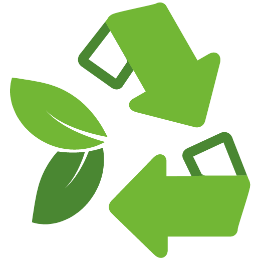

..: Nossa História de Sucesso :.. |
|
|---|---|
 2003 | |
| Fundada em 2003, a ECOnsultoria inicia suas atividades na cidade de Praia Grande atuando na elaboração, execução e gerenciamento de projetos ligados ao licenciamento, planejamento e gestão ambiental. | |
2006 | |
| Com aproximadamente 3 anos de vida, A ECOnsultoria com uma atitude arrojada e visando novos horizontes, transfere suas atividades para São Paulo . | |
2007 | |
| Inicia uma parceria com uma das grandes empresas do setor, a Bio Consultoria - Soluções Ambientais. Parceria que resultou na compra dos ativos da Bio Consultoria soluções ambientais tornando a ECOnsultoria uma das maiores empresa do Brasil no setor de consultoria ambiental e abertura de uma nova sede, com um escritório maior e mais moderno para aprimorar seu atendimento | |
2010 | |
| Começa uma nova etapa de atuação voltada para o licenciamento de aterros sanitários, terminais portuários e monitoramento animal por meio de rádiotelemetria (VHF e satélite) | |
2012 | |
| Solidifica-se no mercado nacional como uma das grandes empresas do Brasil no setor ambiental. A empresa passa a atuar em todo o território nacional, nos mais importantes empreendimentos brasileiros de infraestrutura e energia, como hidrelétricas, ferrovias, gasodutos e mineradoras. |
|